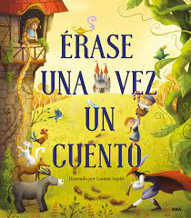
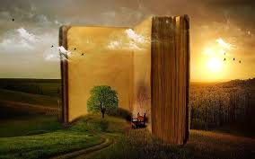
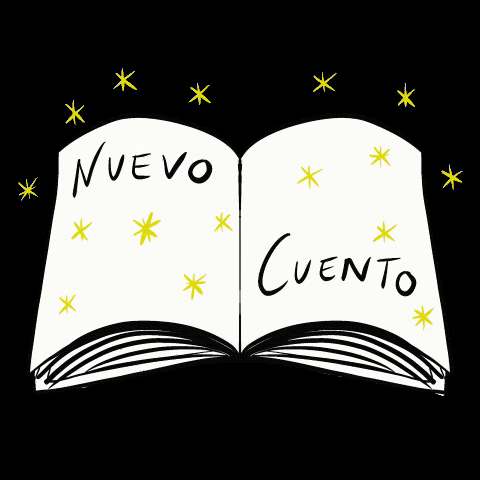
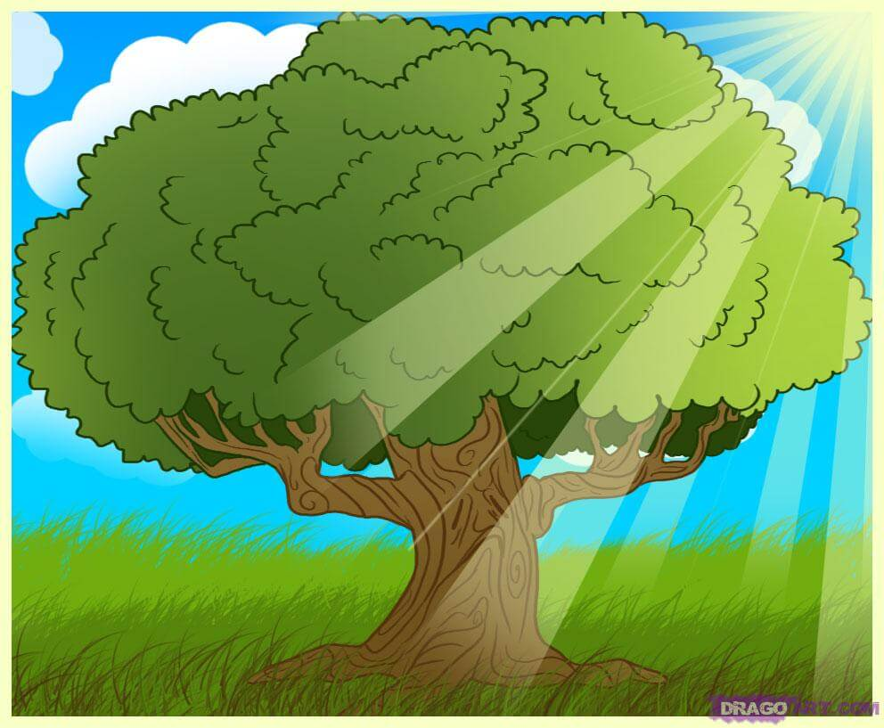

El Cuento


¿Qué es?
Un cuento es una narración breve creada por uno o varios autores, puede ser basada ya sea en hechos reales como ficticios, cuya trama es protagonizada por un grupo reducido de personajes y con un argumento relativamente sencillo.
El que busca un amigo sin defectos, se queda sin amigos.
El cuento es compartido tanto por vía oral como escrita, aunque en un principio lo más común era por tradición oral. Además, puede dar cuenta de hechos reales o fantásticos pero siempre partiendo de la base de ser un acto de ficción, o mezcla de ficción con hechos reales y personajes reales. Suele contener varios personajes que participan en una sola acción central, y hay quienes opinan que un final impactante es requisito indispensable de este género. Su objetivo es despertar una reacción emocional impactante en el lector. Aunque puede ser escrito en verso, total o parcialmente, de forma general se da en prosa. Se realiza mediante la intervención de un narrador, y con preponderancia de la narración sobre el monólogo, el diálogo, o la descripción
"EL ARBOL MAGICO"
Hace mucho mucho tiempo, un niño paseaba por un prado en cuyo centro encontró un árbol con un cartel que decía: soy un árbol encantado, si dices las palabras mágicas, lo verás.
El niño trató de acertar el hechizo, y probó con abracadabra, supercalifragilisticoespialidoso, tan-ta-ta-chán, y muchas otras, pero nada. Rendido, se tiró suplicante, diciendo: "¡¡por favor, arbolito!!", y entonces, se abrió una gran puerta en el árbol. Todo estaba oscuro, menos un cartel que decía: "sigue haciendo magia". Entonces el niño dijo "¡¡Gracias, arbolito!!", y se encendió dentro del árbol una luz que alumbraba un camino hacia una gran montaña de juguetes y chocolate.
El niño pudo llevar a todos sus amigos a aquel árbol y tener la mejor fiesta del mundo, y por eso se dice siempre que "por favor" y "gracias", son las palabras mágicas

Regresar al Index.